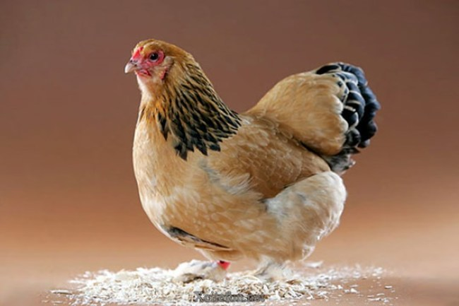

Kembali Ke Daftar Menu
Mengenal Bahan Makanan
Daging ayam

Daging ayam didapatkan dari ayam ternak yaitu unggas yang paling banyak diternak di dunia.
Daging ayam selalu dihidangkan sebagai makanan dalam berbagai cara.
Sejarah
Ukiran-ukiran Babilon lebih dari sekitar 600 SM menampilkan ayam sebagai makanan
Ayam merupakan daging yang paling laris didapatkan ketika Zaman pertengahan.
Penggunaan daging ayam di Amerika Serikat meningkat ketika Perang Dunia II akibat kekurangan daging sapi dan babi.
Di Eropa, pemakan daging ayam meningkat dari pemakan daging sapi dan anak sapi pada tahun 1996, mungkin berhubungan mengenai penyakit sapi gila atau BSE.
Bagian yang dapat dimakan
Biasanya, (dada, kaki, paha, dsb.), hati, jantung, dan empedu diproses menjadi makanan.
ceker ayam lebih jarang dimakan, meskipun kurang lebih terdapat dalam masakan Cina.
Kepala, organ-organ dalam seperti paru-paru dan usus, serta bulu biasanya dibuang atau dikisar menjadi makanan berprotein untuk dimasukkan dalam makanan hewan lain,
sementara masakan Cina menyajikan ayam lengkap pada hidangan (termasuk kepala), bergantung dengan hidangan itu.
Organ dalam juga laris digunakan untuk yakitori.
Kembali Ke Daftar Menu